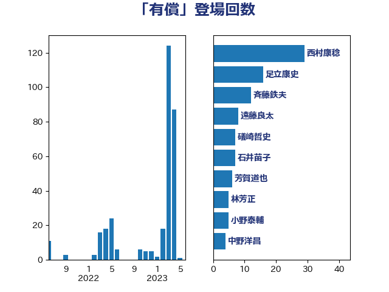

単語「有償」

| 西村康稔 | 自由民主党 | 29 回 |
| 足立康史 | 日本維新の会 | 16 回 |
| 斉藤鉄夫 | 公明党 | 12 回 |
| 遠藤良太 | 日本維新の会 | 8 回 |
| 礒崎哲史 | 国民民主党 | 7 回 |
| 石井苗子 | 日本維新の会 | 7 回 |
| 芳賀道也 | 国民民主党 | 6 回 |
| 林芳正 | 自由民主党 | 5 回 |
| 小野泰輔 | 日本維新の会 | 5 回 |
| 中野洋昌 | 公明党 | 4 回 |
| 音喜多駿 | 日本維新の会 | 3 回 |
| 遠藤敬 | 日本維新の会 | 3 回 |
| 田島麻衣子 | 立憲民主党 | 3 回 |
| 梅谷守 | 立憲民主党 | 3 回 |
| 岸田文雄 | 自由民主党 | 3 回 |
| 塩川鉄也 | 日本共産党 | 3 回 |
| 吉井章 | 自由民主党 | 3 回 |
| 一谷勇一郎 | 日本維新の会 | 3 回 |
| 馬場成志 | 自由民主党 | 2 回 |
| 阿達雅志 | 自由民主党 | 2 回 |
| 長友慎治 | 国民民主党 | 2 回 |
| 緒方林太郎 | 無所属 | 2 回 |
| 田嶋要 | 立憲民主党 | 2 回 |
| 沢田良 | 日本維新の会 | 2 回 |
| 松村祥史 | 自由民主党 | 2 回 |
| 東徹 | 日本維新の会 | 2 回 |
| 末松信介 | 自由民主党 | 2 回 |
| 山添拓 | 日本共産党 | 2 回 |
| 山下貴司 | 自由民主党 | 2 回 |
| 小林鷹之 | 自由民主党 | 2 回 |
| 寺田学 | 立憲民主党 | 2 回 |
| 塩田博昭 | 公明党 | 2 回 |
| 佐藤信秋 | 自由民主党 | 2 回 |
| 仁比聡平 | 日本共産党 | 2 回 |
| おおつき紅葉 | 立憲民主党 | 2 回 |
| 高橋光男 | 公明党 | 1 回 |
| 青柳陽一郎 | 立憲民主党 | 1 回 |
| 阿部弘樹 | 日本維新の会 | 1 回 |
| 金子道仁 | 日本維新の会 | 1 回 |
| 野間健 | 立憲民主党 | 1 回 |
| 野田国義 | 立憲民主党 | 1 回 |
| 里見隆治 | 公明党 | 1 回 |
| 道下大樹 | 立憲民主党 | 1 回 |
| 越智俊之 | 自由民主党 | 1 回 |
| 西岡秀子 | 国民民主党 | 1 回 |
| 舩後靖彦 | れいわ新選組 | 1 回 |
| 羽田次郎 | 立憲民主党 | 1 回 |
| 空本誠喜 | 日本維新の会 | 1 回 |
| 穀田恵二 | 日本共産党 | 1 回 |
| 石川博崇 | 公明党 | 1 回 |
| 矢倉克夫 | 公明党 | 1 回 |
| 田村貴昭 | 日本共産党 | 1 回 |
| 片山大介 | 日本維新の会 | 1 回 |
| 漆間譲司 | 日本維新の会 | 1 回 |
| 浜野喜史 | 国民民主党 | 1 回 |
| 浜田靖一 | 自由民主党 | 1 回 |
| 浜口誠 | 国民民主党 | 1 回 |
| 浅田均 | 日本維新の会 | 1 回 |
| 櫻井周 | 立憲民主党 | 1 回 |
| 榛葉賀津也 | 国民民主党 | 1 回 |
| 松野博一 | 自由民主党 | 1 回 |
| 新藤義孝 | 自由民主党 | 1 回 |
| 打越さく良 | 立憲民主党 | 1 回 |
| 庄子賢一 | 公明党 | 1 回 |
| 平林晃 | 公明党 | 1 回 |
| 平木大作 | 公明党 | 1 回 |
| 平山佐知子 | 無所属 | 1 回 |
| 岩渕友 | 日本共産党 | 1 回 |
| 岡田直樹 | 自由民主党 | 1 回 |
| 岡本あき子 | 立憲民主党 | 1 回 |
| 山田太郎 | 自由民主党 | 1 回 |
| 山口俊一 | 自由民主党 | 1 回 |
| 小池晃 | 日本共産党 | 1 回 |
| 宮本岳志 | 日本共産党 | 1 回 |
| 宗清皇一 | 自由民主党 | 1 回 |
| 大岡敏孝 | 自由民主党 | 1 回 |
| 国定勇人 | 自由民主党 | 1 回 |
| 吉川沙織 | 立憲民主党 | 1 回 |
| 加藤勝信 | 自由民主党 | 1 回 |
| 佐藤正久 | 自由民主党 | 1 回 |
| 仁木博文 | 無所属 | 1 回 |
| 井野俊郎 | 自由民主党 | 1 回 |
| 中川宏昌 | 公明党 | 1 回 |